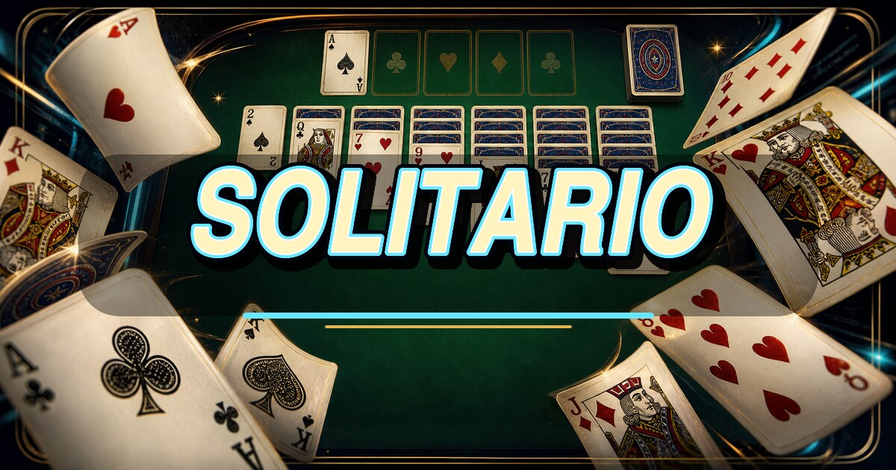

MOSSE0
TEMPO00:00
PUNTI0
VARIANTECLASSICO
♠
♥
♦
♣
RETROWEBGAMES • CARTE

Altre varianti verranno aggiunte qui.
🏆 HIGH SCORES
PESCA 17 COLONNE52 CARTE
TORNA AL MENU
Tap per selezionare • trascina per spostare • doppio tap per mossa automatica